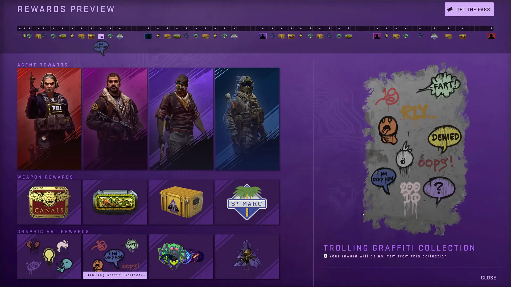

Operations are a form of DLC introduced in Counter-Strike: Global Offensive consisting of community created content including community maps, a purchasable operation coin, & a lot of content from Valve like Co-Op Strike or Guardian missions. Starting with Operation Breakout, pass owners had the privilege of participating in missions. Missions are released in a timely schedule, with players starting out able to complete a limited number of missions, but will gain more missions to complete after a period of time, and the amount of missions the player can do accumulates over time. When the player activates a mission, they will automatically launch a find game for the required game mode for the mission.
Operations since Operation Shattered Web also introduced exclusive weapon collections, stickers, graffiti, patches, & cases. Earlier operations were scheduled to last between 2-5 months with a one month break inbetween, though the past three operations have lasted around 20 weeks. Some operations have been extended to give players additional time to complete missions & claim rewards. Since operations contain community created content, a portion of the proceeds go directly to authors of content included within the operation. Regardless of new operations being released, new weapon cases & capsules can still be released during an operation. For example, the Dreams & Nightmares Case which was released during Operation Riptide.
Skins, also referred to as finishes, are a feature exclusive to Counter-Strike: Global Offensive, introduced in the Arms Deal update. They are weapons with different textures that can be equipped in-game. They are entirely cosmetic, holding no gameplay function.
StatTrak™ is a weapon quality which tracks the number of kills performed by the owner of the weapon. StatTrak™ kills do not transfer between users when the item is traded. StatTrak™ kills can be converted to another StatTrak™ weapon of the same class through a StatTrak™ Swap Tool.
A float is chosen when a weapon skin is dropped, unboxed or received from a trade up contract. The float simulates a randomized condition on the skin. The rarity of the float is based on a bell curve for most weapons, with low float Factory New items and high float Battle-Scarred items being the rarest[2]. The closer it is to 0, the cleaner the skin is. The closer it is to 1, the more worn it appears.
Based on the finish style used, the same skin may have different looks due to variations with texture offset and displacement. This information is stored in a visible pattern index seed between 1 & 1000.[3] There are many interesting seeds for various weapon finishes and some are more sought after than others. This drives the price of specific items with specific items up in value. A good example of this is the AK-47 - Case Hardened. Patterns with lots of blue are known as "blue gems" and are typically more expensive.